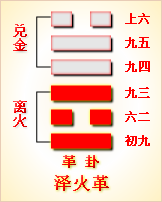

<!DOCTYPE html PUBLIC "-//W3C//DTD XHTML 1.0 Transitional//EN" "http://www.w3.org/TR/xhtml1/DTD/xhtml1-transitional.dtd">

<html xmlns="http://www.w3.org/1999/xhtml">
<head>
<meta content="text/html; charset=utf-8" http-equiv="Content-Type"/>
<title>周易第四十九卦：革卦 泽火�?兑上离下原文解释翻译-周易-国学�?/title>
<meta content="周易,革卦,泽火�?兑上离下" name="keywords"/>
<meta content="周易,革卦,泽火�?兑上离下，周易第四十九卦：革�?泽火�?兑上离下解释翻译�?（泽火革）兑上离�?《革》：已日乃孚。元亨。利贞，悔亡�?初九，巩用黄牛之革�?六二，巳日乃革之，征吉，无咎�?九三，征凶。贞厉。革言三就，有孚�?九四，悔亡。有孚改�? name="description"/>
<link href="css.css" media="screen" rel="stylesheet" type="text/css"/>
</head>
<body>
<div class="gxlayout">
</div>
<div class="gxlayout">
<div class="ihead">
<div class="title"><a>周易</a></div>
<ul class="more fl">
<li>当前位置:<a>国学梦首�?/a> &gt; <a>国学经典</a> &gt; <a>经部</a> &gt; <a>四书五经</a> &gt; <a>周易</a> &gt;  周易第四十九卦：革卦 泽火�?兑上离下原文解释翻译</li>
</ul>
</div>
<div class="gxbl fl">
<div class="latitle">

<h1>周易第四十九卦：革卦 泽火�?兑上离下</h1>
<div class="lainfo"><span>作者：佚名</span> <span>全集�?a>周易</a></span> <span>来源：网�?/span> <span>[<a rel="nofollow" target="_blank">挑错/完善</a>]</span></div>
</div>
<div class="lacontent">
<div class="clearfix"></div>
<p style="text-align:center"></p>
<p style="text-align:center"><a>周易第四十九卦详�?/a></p>
<p style="text-align:center"><a>第四十九卦初九爻详解</a>　<a>第四十九卦六二爻详解</a>　<a>第四十九卦九三爻详解</a></p>
<p style="text-align:center"><a>第四十九卦九四爻详解</a>　<a>第四十九卦九五爻详解</a>　<a>第四十九卦上六爻详解</a></p>
<p><strong><a target="_blank">周易</a>第四十九�?�?泽火�?兑上离下</strong></p>
<p>革：己日乃孚，元亨利贞，悔亡�?/p>
<p>彖曰：革，水火相息，二女同居，其志不相得，曰革。己日乃�?革而信也。文明以说，大亨以正，革而当，其悔乃亡。天地革而四时成，汤武革命，顺乎天而应乎人，革之时 义大矣哉! 象曰：泽中有火，�?君子以治历明时。初九：巩用黄牛之革�?/p>
<p>象曰：巩用黄牛，不可 以有为也�?/p>
<p>六二：己日乃革之，征吉，无咎。象曰：己日革之，行有嘉也�?/p>
<p>九三：征凶，贞厉，革言三就，有孚。象曰：革言三就，又何之矣�?/p>
<p>九四：悔亡，有孚改命，吉。象曰：改命之吉，信志也�?/p>
<p>九五：大人虎变，未占有孚。象曰：大人虎变，其文炳也�?/p>
<p>上六：君子豹变，小人革面，征凶，居贞吉。象曰：君子豹变，其文蔚也。小人革面，顺以从君也�?/p>
<p><strong><a href="49_革卦.html" target="_blank">革卦</a>卦象，泽火革卦的象征意义</strong></p>
<p>革卦，这个卦是异卦相叠，下卦为离，上卦为兑。离为火，兑为泽，泽内有水。水在上，火在下，表明火在下可以把泽水烤干，失去水的泽就变成了其他性质的东西。从另一个角度来说，如果泽水四溢，就会把下面的火浇灭。火灭之后，也就不再是火了，而变成其他性质的东西。火旺水�?水大火熄。二者相生亦相克，必然出现变革，所以本卦命名为“革”�?/p>
<p>同时，离具有光明之意，兑又指喜悦。这又告诉人们，革的目的是消灭旧的，产生新的光明，给人们带来喜悦�?/p>
<p>革卦位于<a href="48_井卦.html" target="_blank">井卦</a>之后，《序卦》中这样解释道：“井道不可不革，故受之以革。”一口井使用久了，必须定期清理，所以井卦之后要求变革。《杂卦》中说道：“革，去故也。”，因此，革卦指变革，指除旧布新�?/p>
<p>《象》中这样解释革卦：泽中有火，�?君子以治历明时。这里指出：革卦的卦象是�?�?下兑(�?上，为泽中有火之表象。大水可以使火熄�?大火也可以使水蒸发，如此，水火相克相生，从而产生变革。君子根据变革的规律制定历法以明辨春、夏、秋、冬四季的变化�?/p>
<p>革卦象征变革，所要表达的道理就是顺天应人，属于上上卦。《象》曰：苗逢旱天渐渐衰，幸得天恩降雨来，忧去喜来能变化，求谋干事遂心怀�?/p>
<p>【革卦卦象，泽火革卦的象征意义释义�?/p>
<p>此卦卦名为革。“革”字的金文是一个象形字，像被剖剥下来的兽皮。中间的圆形物，是被剥下的兽身皮，余下的部分是兽的头、身和尾。《说文》中说：“革，兽皮治去其毛。”兽皮去掉毛便变皮为革了，所以革的引申义是变革、改革、革命的意思。井水需要不断的清理才能保持洁净，这种清理就是一^种改革彳了为，所以井卦的后面是革卦�?/p>
<p>革卦�?a target="_blank">�?/a>：革卦的卦画是四阳二阴，其排列顺序与下卦�?a href="50_鼎卦.html" target="_blank">鼎卦</a>正好相反，革卦与鼎卦互为覆卦�?/p>
<p>革卦卦象：从卦象上分析，革卦上卦为兑为泽为羊为牲，下卦为离为火为刀为晒，泽中有火就是革卦的大形象。大泽中会有火山爆发，人们必须重新择地而居，这是大的社会变革。从小处来说，剥下的兽皮首先需要用刀刮去油脂，綳起来晒干，这就是取象于革卦的下卦�?晒干后的兽皮然后再浸入水中泡软，进一步去脂和去毛，这就是取象于革卦的上卦兑。所以革卦的卦象描述了制革的简单过程。将兽皮制作成革，使兽皮发生了较大的变化，使兽皮对人类有更广泛的用途。所以人们将对社会有重要意义的运动称之为变革、革命。另外，卦象中还有火炼金的形象，表示改革就像火炼金属，将金属制成对人类有用的各种工具一样，对人类社会的进步有重要作用�?/p>
<p>关键词：周易,革卦,泽火�?兑上离下</p>
<div class="clearfix"></div>
<div class="title"><div class="thot">解释翻译</div><span>[挑错/完善]</span></div><p><a href="49_革卦.html" target="_blank">革卦</a>：祭祝那天用俘虏作人牲。大亨大通，吉利的占问。没有悔恨�?/p>
<p>初九：用黄牛的皮革加固束紧�?/p>
<p>六二：祭祝的日子要改变。出征，吉利。没有灾祸�?/p>
<p>九三：出征，凶险。占得险兆。把马的胸带绑三匝，打了胜仗，抓到俘虏�?/p>
<p>九四：没有悔恨。捉到俘虏，改变了命令。言利�?/p>
<p>九五：指挥官勃然大怒，未必会取得胜利�?/p>
<p>上六：君子勃然大怒，小人不满反抗。出征，凶险。占问居处得吉兆�?/p>
<div class="title"><div class="thot">注释出处</div><span>[请记住我�?国学�?www.guoxuemeng.com]</span></div><p>①革：六十四卦卦名之一。改革之卦之�?亦改革的中心之卦。乃论述君王如何变革之卦�?/p>
<p>②己日：一个卦里连用两个“己日”，由此可见并非泛用。但自古以来没有有关“己日”的确切注释。查《周易》《丰》卦卦辞中有“宜日中”一辞，此“日中”乃言日中午极丰盛之时。若按此“日中”所言时间用语的用法，“己日”用法也当效此。“己”时在中国计时排位上，它排在天干“甲、乙、丙、丁、戊、己、庚、辛、壬、癸”的第六位，若按太阳上午、中午、下午的计时看，它当值日过中午偏西下斜之�?故“己日”当按日己过极盛转衰之时讲。此处有喻国势由盛转衰之迹象�?/p>
<p>③巩用黄牛之革：“巩”，牢固。此处指根深蒂固的陈规陋习和腐朽�?会势力。“革”，古兽皮加工去毛曰“革�?再加工变柔曰“〓�?weī)。由于此卦为变革之卦，其它各爻均谈的是变革之事，因此，这一“革”字也当指变革，而不是指一般牛皮或牛皮条。“巩用黄牛之革”，是说对原来根深蒂固的腐朽的社会现象和势力，必须象加工黄牛皮那样予以变革，绝不能等闲视之�?/p>
<p>④征吉：“征”、迹象。“征吉”，迹象很吉祥�?/p>
<p>⑤征凶：迹象很凶险�?/p>
<p>⑥革言三就：这里可能两种含义兼而有之。一种指再三慎重考虑并制定出改革的方针政�?一种指再三向国人宣传改革的利弊得失和再三申饬改革的命令。若按“革言三就”前有“征凶，贞厉”后有“有孚”来看，将更偏重于后一种意思�?/p>
<p>⑦有孚改命：接上爻“革言三就，有孚”，乃言上下同心于改革。“改命”，有关国家政权命运的政策。⑧大人虎变：君主应象猛虎一样雷厉风行地进行改革�?/p>
<p>⑨未占有孚：“占”，占卜。此句是说君主的革除旧弊用不着占卜也会得到上下的赞誉和信服�?/p>
<p>⑩君子豹变：喻君主的改革有如豹子斑纹一样有一处无一处�?/p>
<p>⑾小人革面：指小人们应付差事，只做一些表面文章�?/p>
<p>⑿征凶：迹象很凶险�?/p>
<p>⒀居贞，吉：君王居而守正则吉祥�?/p>
<div class="clearfix"></div>
<div class="contextdhall clearfix">
<ul>
<li>上一篇：<a href="48_井卦.html">周易第四十八卦：井卦 水风�?坎上巽下</a> </li>
<li>下一篇：<a href="50_鼎卦.html">周易第五十卦：鼎�?火风�?离上巽下</a> </li>
<li>全   文�?a>周易</a></li>
</ul>
</div>
</div>
<div class="clearfix mt20"></div>
</div>
</div>
<div class="clearfix mt20"></div>
<div class="gxlayout">
</div>
<script>
var _hmt = _hmt || [];
(function() {
  var hm = document.createElement("script");
  hm.src = "https://hm.baidu.com/hm.js?872034ded637616c5cf8e173a446bb0e";
  var s = document.getElementsByTagName("script")[0];
  s.parentNode.insertBefore(hm, s);
})();
</script>
</body>
</html>
